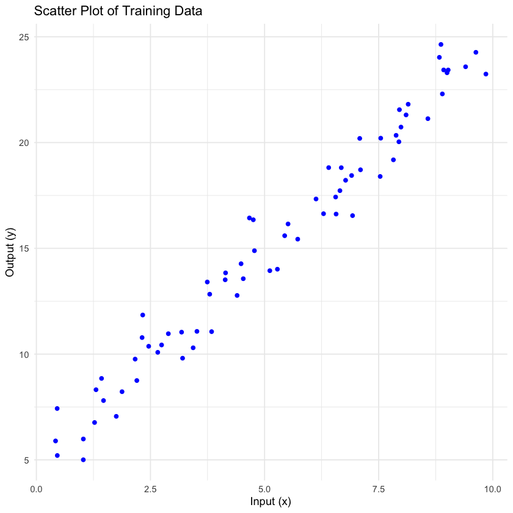
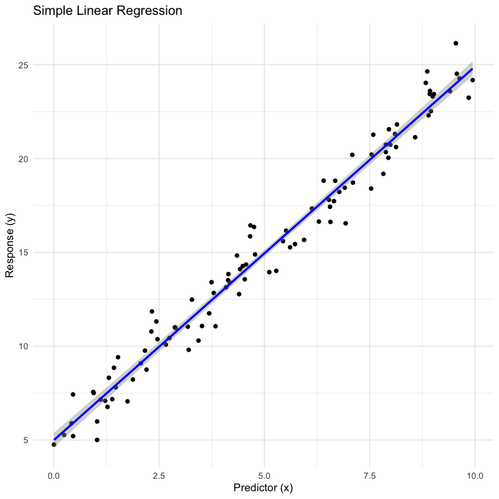

Anyone who has moved between R and Python has felt the difference before they could name it. In R, lm(y ~ x, data = d) hands back a fitted model; the call that creates the object is the call that trains it. In scikit-learn, LinearRegression() hands back an object that has never seen data, and nothing happens until .fit(X, y). The results are the same, as the worked example below shows to two decimal places. What differs is when fitting happens and what mechanism makes that timing possible, and that mechanism is the subject here: S3 generic functions on the R side, a class with two methods on the Python side. The post ends by building each style in the other language, which is the quickest way to see that the choice is a convention rather than a constraint. The scikit-learn convention has since spread well beyond scikit-learn, to Keras and much of the PyTorch ecosystem; R’s is the older one, and its formula interface is the reason it survives.
S3 dispatch is what lets a constructor also be a trainer
R’s most used object system, S3, has no classes in the usual sense. An object is a list with a class attribute, and a generic function such as print looks at that attribute and dispatches to print.<class> if one exists, or to a default. Three lines define a class and one more gives it a print method:
create_human <- function(name, age) {
human <- list(name = name, age = age)
class(human) <- "human"
return(human)
}
print.human <- function(x, ...) {
cat("Human Attributes \n")
cat("Name: ", x$name, "\n")
cat("Age: ", x$age, "\n")
}
john <- create_human("John Doe", 30)
print(john)Human Attributes
Name: John Doe
Age: 30Model functions work the same way. lm, glm, rpart and randomForest each build the model matrix from a formula, solve for the parameters, and return a list tagged with a class, so that print, summary and predict dispatch to the right method afterwards. Stripped of the numerical care (the QR decomposition is real, the edge cases and Fortran calls are omitted), lm is a function that fits on the way out:
lm <- function(formula, data, ...) {
mf <- model.frame(formula = formula, data = data) # rows and columns the formula names
X <- model.matrix(attr(mf, "terms"), mf) # design matrix, intercept included
y <- model.response(mf)
fit <- qr.solve(qr(X), y) # least squares
result <- list(coefficients = fit, residuals = y - X %*% fit,
fitted.values = X %*% fit, qr = qr(X),
terms = terms(formula), call = match.call())
class(result) <- "lm"
result
}There is no unfitted lm object because the function that makes one does the fitting. Prediction is then predict(model, newdata), which dispatches to predict.lm and reads the coefficients out of the object. Two arrows, and no fit step anywhere a user can see:
lm(y ~ x, data) -> model.frame -> model.matrix -> QR solve -> object of class "lm"
predict(model, newdata) -> predict.lm -> coefficients from the object -> predictionsThe same regression, the same score, from both sides
The data is synthetic on purpose, so that nothing about cleaning, scaling, encoding or outliers gets in the way of the API comparison: a hundred points on a line of slope 2 and intercept 5 with unit Gaussian noise, split 70/15/15 into train, dev and test with a fixed seed.
generate_linear_data <- function(n = 100, seed = 123, slope = 2, intercept = 5, noise_sd = 1) {
set.seed(seed)
x <- runif(n, min = 0, max = 10)
y <- intercept + slope * x + rnorm(n, mean = 0, sd = noise_sd)
data.frame(x = x, y = y)
}
split_data <- function(data, train_ratio = 0.7, dev_ratio = 0.15, test_ratio = 0.15, seed = 123) {
if (train_ratio + dev_ratio + test_ratio != 1) stop("ratios must sum to 1")
set.seed(seed)
n <- nrow(data)
train_indices <- sample(seq_len(n), size = floor(train_ratio * n))
remaining <- setdiff(seq_len(n), train_indices)
dev_indices <- sample(remaining, size = floor(dev_ratio * n))
test_indices <- setdiff(remaining, dev_indices)
list(train = data[train_indices, ], dev = data[dev_indices, ], test = data[test_indices, ])
}
df <- split_data(generate_linear_data())
head(df$train) x y
31 9.6302423 24.266249
79 3.5179791 11.074102
51 0.4583117 5.206217
14 5.7263340 15.434093
67 8.1006435 21.306963
42 4.1454634 13.839324
In R the fit is the constructor call, and summary dispatches on the result:
lm_model <- lm(y ~ x, data = df$train)
summary(lm_model)Call:
lm(formula = y ~ x, data = df$train)
Residuals:
Min 1Q Median 3Q Max
-2.13378 -0.74871 -0.05242 0.59871 2.34082
Coefficients:
Estimate Std. Error t value Pr(>|t|)
(Intercept) 4.85761 0.26186 18.55 <2e-16 ***
x 1.99524 0.04485 44.49 <2e-16 ***
Residual standard error: 1.018 on 68 degrees of freedom
Multiple R-squared: 0.9668, Adjusted R-squared: 0.9663
F-statistic: 1979 on 1 and 68 DF, p-value: < 2.2e-16The slope and intercept land within a standard error of the 2 and 5 the data were made from. Scored on the dev set with mean absolute percentage error:
dev_predictions <- predict(lm_model, newdata = df$dev)
mape <- mean(abs((df$dev$y - dev_predictions) / df$dev$y)) * 100
print(paste0("MAPE on dev set: ", round(mape, 2), "%"))[1] "MAPE on dev set: 4.49%"
Now the same split, written to CSV from R and read into pandas, through scikit-learn. Three steps where R had one: construct, fit, predict.
import pandas as pd
from sklearn.linear_model import LinearRegression
from sklearn.metrics import mean_absolute_percentage_error
df_train = pd.read_csv("train_data.csv")
df_dev = pd.read_csv("dev_data.csv")
model = LinearRegression() # nothing fitted yet
model.fit(df_train[["x"]], df_train["y"]) # now it is
dev_predictions = model.predict(df_dev[["x"]])
mape = mean_absolute_percentage_error(df_dev["y"], dev_predictions) * 100
print(f"MAPE on dev set: {mape:.2f}%")MAPE on dev set: 4.49%Identical to the R figure, as it must be: both solve the same least-squares problem on the same seventy rows. The 4.49% is a property of the data and the model, not of either library, which is the point of running it twice.
Either convention can be built in the other language
Because the difference is convention, each side can wear the other’s clothes. A Python class that takes a formula, parses it, and fits on __call__ gives scikit-learn an R-shaped front door:
class RStyleModel:
def __init__(self, model_class, **kwargs):
self.model_class = model_class
self.kwargs = kwargs
self.fitted_model = None
def __call__(self, formula, data):
y, X = self._parse_formula(formula, data)
self.fitted_model = self.model_class(**self.kwargs)
self.fitted_model.fit(X, y)
return self
def predict(self, X):
if self.fitted_model is None:
raise ValueError("Model has not been fitted yet.")
return self.fitted_model.predict(X)
def _parse_formula(self, formula, data):
response, predictors = formula.split("~")
y = data[response.strip()]
if predictors.strip() == ".":
X = data.drop(response.strip(), axis=1)
else:
X = data[[p.strip() for p in predictors.split("+")]]
return y, X
lm = RStyleModel(LinearRegression)
lm("y ~ x", df_train) # fits here, as R would
linear_predictions = lm.predict(df_dev[["x"]])
mape = mean_absolute_percentage_error(df_dev["y"], linear_predictions) * 100
print(f"MAPE on dev set: {mape:.2f}%")MAPE on dev set: 4.49%The other direction, an R object with an explicit fit, can be written in any of R’s object systems. In S3 it is a constructor that returns an empty object and a fit generic that fills it:
LinearRegression <- function() {
structure(list(coefficients = NULL, intercept = NULL), class = "LinearRegression")
}
fit <- function(model, ...) UseMethod("fit") # the generic; base R has none
fit.LinearRegression <- function(model, X, y) {
X <- cbind(1, as.matrix(X))
beta <- solve(t(X) %*% X) %*% t(X) %*% y
model$intercept <- beta[1]
model$coefficients <- beta[-1]
model
}
predict.LinearRegression <- function(model, X) {
cbind(1, X) %*% c(model$intercept, model$coefficients)
}
model <- LinearRegression()
model <- fit(model, df$train$x, df$train$y)In R6, which has mutable objects and methods that live on them, it reads almost as the Python does:
library(R6)
LinearRegression <- R6Class("LinearRegression",
public = list(
coefficients = NULL, intercept = NULL,
fit = function(X, y) {
X <- cbind(1, X)
beta <- solve(t(X) %*% X) %*% t(X) %*% y
self$intercept <- beta[1]
self$coefficients <- beta[-1]
invisible(self)
},
predict = function(X) cbind(1, X) %*% c(self$intercept, self$coefficients)
)
)
model <- LinearRegression$new()
model$fit(df$train$x, df$train$y)S4 and Reference Classes can do the same with more ceremony. The S3 version is the one to notice: it shows that R never lacked the ability to separate construction from fitting. lm fits on construction because its authors chose to, in 1990s S, for the interactive statistician who wants the summary in one line.
Where it stops holding
The imitation is shallow in one direction. R’s formula interface is not a string with a tilde in it; y ~ x + z:w encodes interactions, factors expand to dummy columns, and model.matrix does the work that the _parse_formula above waves at. The Python side has that machinery in patsy and statsmodels, which is where an R user who wants formulas should look rather than at a wrapper. In the other direction, R has already adopted the explicit style where it matters: tidymodels separates a model specification from its fit exactly as scikit-learn does, for the same reason, that a pipeline needs an unfitted model object to hold a place in it.
Which to prefer is a question about the session. One-line fit-and-summarise suits exploration at a console; construct-then-fit suits a program, where the unfitted object can be configured, cloned, cross-validated and put in a pipeline before any data arrives. Neither is more correct, and the score does not care.
Python. Fits. Objects. R. Fits. Formulas. Either. Interface. Can. Be. Imitated.
References
- Chambers, J. M. and Hastie, T. J. (1992). Statistical Models in S. Wadsworth. The origin of the formula interface and the fit-on-construction convention.
- Wickham, H. (2019). Advanced R, 2nd ed., chapters 13 (S3) and 14 (R6).
- Buitinck, L. et al. (2013). API design for machine learning software: experiences from the scikit-learn project. arXiv:1309.0238. The estimator interface, and why
fitis separate. - scikit-learn: developing estimators.
- tidymodels: parsnip, R’s explicit specify-then-fit interface.